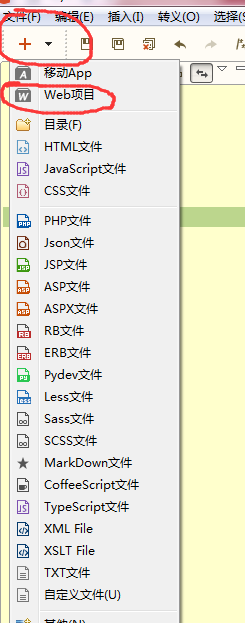
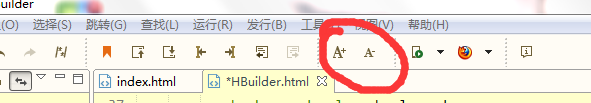
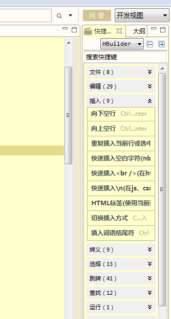
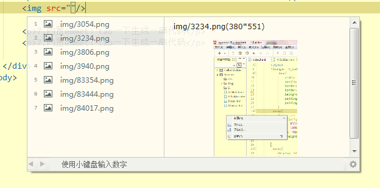
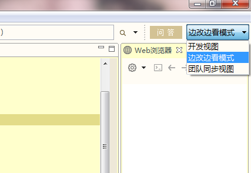

1.飞快的编码速度
2.HBuilder直接创建移动App，打包为ios或Android原生安装包
3.HTML5语法、HTML5+语法、三大浏览器扩展语法，尽收HBuilder中
4.绿柔设置界面，更加护眼
5.无死角提示：除了语法，还能提示ID、Class、图片、链接、字体…
6.边改边看：一边写代码，一边看效果
7.内置emmet：tab一下生成一串代码
HBuilder特色功能1.单击左上角的“加号”，选择新建web，除了生成html文件，HBuilder还会自动生成img、css、js三个文件夹
2.可以通过工具栏选项或滚动鼠标滚轮快速调整代码字体大小
3.强大的快捷键功能，还可以在右侧输入框输入想实现的功能进行快捷键搜索
4.写img代码时，会自动显示图片，图片名称和图片大小
5.支持边看边改，在右上角选择边看边改模式，可以快速看到网页的样式(不要忘记先保存代码再看网页，快捷键：Ctrl+Shift+s))。
